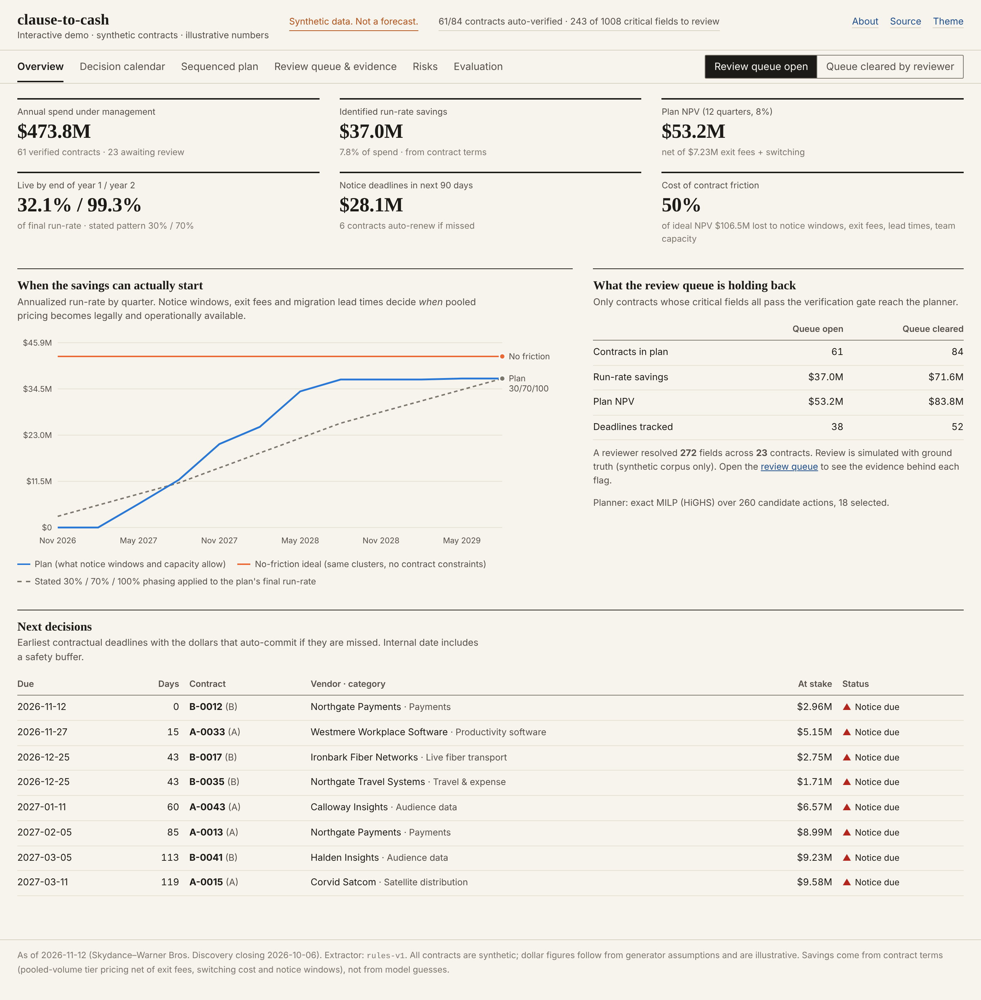

A working prototype for merger integration, built around vendor contracts
A model can read a contract. It shouldn’t get to decide what the contract says.
clause-to-cash pulls the terms that move money out of vendor agreements (renewal dates, notice periods, minimum commitments, price tiers) and won’t act on a single one until deterministic code has checked the evidence for it. Verified terms feed the date math, the price math and a consolidation planner. Agents reach all of it through an MCP server that is built to say no.

The hard part isn’t extraction
Contracts hold the facts that decide when merger savings can start. A non-renewal notice that goes out a day late commits a vendor line for another term. A purchasing clause decides whether two companies are allowed to pool volume at all. A change-of-control clause can hand a vendor a termination right on closing day.
Template OCR and RPA break on the first unfamiliar layout. A plain LLM prompt reads any layout and is wrong in the same calm voice, so a confident 36 where the contract says 24 gets scheduled, priced and acted on. The goal here is narrower than “extract well”: make every wrong answer visible before anything downstream touches it.
One contract, three confident mistakes
Contract A-0015 is a satellite-distribution agreement worth about $9.6M a year (synthetic, like all of them). These are the three clauses that matter here:
Start from a correct reading of the document, then corrupt one field at a time the way a real extractor plausibly would. Each wrong answer below arrives with 90–95% self-reported confidence.
The extractor returned
initial_term_months = 36, confidence 0.95“The initial term of this Agreement shall be 36 months from the Effective Date.”The gate
UNGROUNDEDThat sentence is not in the document. Section 2.1 says twenty-four months.The extractor returned
change_of_control = "silent", no quote, confidence 0.90The gate
CUE_MISSED“Silent” needs explicit negative evidence, or a document with no change-of-control language at all. Section 5.1 conditions assignment “by … change of control” on consent.The extractor returned
nonrenewal_notice = 90 months, confidence 0.95“… written notice of non-renewal at least ninety (90) days prior to the end of the then-current term.”The gate
CONTRADICTED · INVARIANT:IMPLAUSIBLE_NOTICE · INVARIANT:NOTICE_EXCEEDS_TERMThe quote is real but says days. A 90-month notice period is also longer than the 24-month term.A confidence threshold of 0.70 passes all three. Reproduce this exactly with python scripts/worked_example.py.
When the terms do verify, nothing downstream involves a model. Dates and dollars come from plain code:
| Current term ends | 2027-06-09 (24 months from 2023-06-10, then renewals of 12) |
|---|---|
| Non-renewal notice due | 2027-03-11 (90 days before the end, a Thursday) |
| Internal deadline | 2027-02-25 (two-week safety buffer) |
| Committed if missed | about $9.58M a year at current volume, 3% escalator included |
How it fits together
- Contracts arrive as plain text in any drafting style.
- The extractor proposes a value, a verbatim quote and a confidence for each field.
- The verification gate accepts or flags every field.
- Accepted fields feed the engines: notice dates, tier pricing and an exact MILP plan. Flagged fields go to human review with the evidence highlighted, then rejoin.
- Surfaces: a dashboard and an MCP server that refuses when its inputs are unverified.
What the gate checks
A field is auto-accepted only if every check passes. “I can’t tell” counts as a reason to review, never as a pass.
- Grounding
- The quoted evidence has to exist in the document, verbatim, tolerating whitespace and line-end hyphenation.
- Corroboration
- An independent, generic parser reads the quote and answers whether it supports the claimed value. This catches misread numbers and dates, and evidence lifted from the wrong clause.
- Invariants
- Cross-field sanity: price tiers are contiguous and discounted, an auto-renewing contract has a notice period, a notice period fits inside the term.
- Cue guard
- An answer of “absent” or “silent” needs explicit negative evidence, or the document must contain none of that clause’s vocabulary. This is the check for the silent miss, the dangerous one.
- Supersession
- A value cited only from the base agreement is suspect when a later amendment discusses the same term.
- Document canary
- If the effective date, term or pricing can’t be found, the extractor didn’t understand the document, so every “absent” answer in it is distrusted.
- Confidence floor
- Cheap triage at 0.70. It catches nothing on its own in the fault study below, because wrong answers arrive confident.
Does it work?
On synthetic data, yes, and the evaluation says where that stops. Headline numbers use corpora generated after development was frozen.
| Test | Baseline | Baseline result | With the gate |
|---|---|---|---|
| 8,786 injected single-field faults across eight failure modes, each at 90–95% confidence | confidence floor only | 0.0% caught | 100.0% caught |
| Whole pipeline with a 5% field-error extractor; every chosen action re-priced under the true terms | trust the extractor | 66.6% of true plan value realized; 6 of 78 actions invalid | 100% realized; 0 of 81 invalid; 5.5% of fields sent to a reviewer |
| A drafting style held out from every rule and lexicon | gate without its document canary | 207 wrong fields auto-accepted (61% of those accepted) | 0 wrong accepted; every document of that style goes to review |
The third row has a cost: on unfamiliar phrasing the gate fails safe, and automation drops. Even a perfect extractor citing the right sentence gets only 57% of that style’s fields auto-accepted, because the corroboration parsers don’t recognise the paraphrase.
What this doesn’t show. The contracts, the rules extractor, the gate and the fault catalogue all come from one author, so high accuracy on the styles the rules were written for isn’t evidence of real-world accuracy. The fault study did find a real bug in the gate (a hard-wrapped clause slipping past the affiliate cue), which is why the headline seeds were regenerated afterwards. The reviewer in the end-to-end test is a perfect oracle. There is no live-LLM run: the Claude adapter is tested against a fake transport only. The full protocol, including what was tuned on what, is in EVALUATION.md.
What an agent gets
A stdlib MCP server exposes five tools: list_deadlines, get_contract, check_notice, review_queue and savings_plan. The rule for anything an agent can act on is that unverified inputs produce a refusal with reasons, not a confident number. A-0002 is written in a style the offline extractor wasn’t built for:
// check_notice(contract_id="A-0002", send_on="2027-03-12")
{
"safe_to_act": false,
"verdict": "REFUSED",
"needs_review": {
"effective_date": ["DOC_UNREADABLE", "INVARIANT:MISSING_EFFECTIVE_DATE"],
"initial_term_months": ["DOC_UNREADABLE", "INVARIANT:MISSING_TERM"],
"auto_renew": ["DOC_UNREADABLE"],
"nonrenewal_notice": ["DOC_UNREADABLE"]
},
"message": "Notice-relevant fields are not verified; a human must review …"
}
Add it to Claude Code with claude mcp add clause-to-cash -- python -m clause_to_cash.mcp_server.
Run it
git clone https://github.com/mkhambatti/clause-to-cash-engine.git cd clause-to-cash-engine pip install -e ".[dev]" pytest # 47 tests, about 20 s python -m clause_to_cash demo # writes out/dashboard.html
Python 3.12 or newer. The offline path needs no API key and no network. python -m clause_to_cash eval regenerates every number on this page in about three minutes.
Where it stops
- Synthetic data only. Real vendor contracts are confidential, so the corpus is generated, with ground truth. Dollar figures follow from the generator’s assumptions and aren’t a forecast.
- The corroboration layer is keyword-based and conservative. A production version would be calibrated on labelled real contracts and learn from reviewer corrections. None of that is built.
- The planner is deliberately simple: contract-level pricing, one volume per contract, assumed switching costs, no negotiation dynamics. Its job is to show why contract timing changes the answer, not to forecast savings.
- Not legal advice. It’s a prioritisation and verification tool for the people who are.